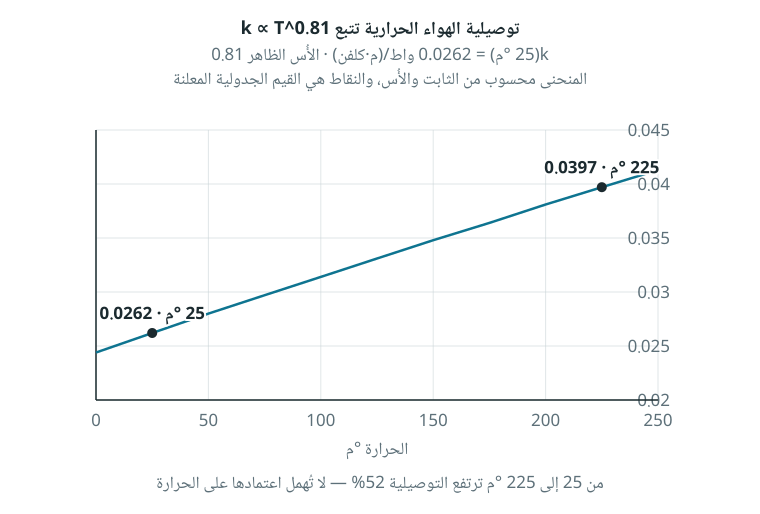

التوصيلية الحرارية للغازات
Thermal conductivity of gases
التوصيلية الحرارية للغاز k هي معدل نقل الحرارة عبر وحدة المساحة لوحدة تدرّج حراري، ووحدتها W/(m·K). للهواء عند 25 °C قيمتها 0.0262 W/(m·K)، وتزيد مع الحرارة لأن سرعة الجزيئات تزيد. وهي أصغر بنحو ثلاثة رتب من المعادن، ولهذا يُستعمل الغاز الساكن عازلاً.
الغاز ينقل الحرارة بحركة جزيئاته: الجزيئات الساخنة تنتقل إلى مناطق أبرد فتحمل طاقتها وتوزّعها بالتصادم. ولهذا تعتمد التوصيلية على سرعة الجزيئات المتوسطة، التي تتناسب مع الجذر التربيعي للحرارة المطلقة، وعلى المسار الحر المتوسط. والنتيجة أن التوصيلية تزيد مع الحرارة بنحو T^0.7 إلى T^0.9، وهو سلوك معاكس للمعادن التي تنقص توصيليتها مع الحرارة. مثال: الهواء عند 25 °C له k = 0.0262، وعند 225 °C له k = 0.0398، أي زيادة 52% مقابل زيادة الحرارة المطلقة 67%.
كيف تعمل الظاهرة؟
في الغاز تكون الجزيئات متباعدة والتصادمات هي وسيلة نقل الطاقة الوحيدة. وعندما يوجد تدرّج حراري تنتقل الجزيئات من الطبقة الساخنة إلى الباردة فتحمل طاقة حركية أعلى، وتعود جزيئات من الطبقة الباردة بطاقة أقل. والمحصلة تدفق طاقة من الساخن إلى البارد. وتتناسب التوصيلية مع الكثافة والمسار الحر المتوسط والسرعة المتوسطة والحرارة النوعية. وبما أن الكثافة تنقص مع الحرارة بينما تزيد السرعة، والمسار الحر يزيد، تكون المحصلة زيادة طفيفة في k مع الحرارة، وهذا ما يُلاحظ في جداول الهواء.
العلاقة بالأرقام
k ≈ (1/3)·ρ·c_v·λ·v̄، حيث λ المسار الحر المتوسط وv̄ السرعة المتوسطة. وللهواء عند 25 °C: k = 0.0262 W/(m·K)، وρ = 1.184 kg/m³، وc_v = 718 J/(kg·K)، وv̄ = 468 m/s، فيكون λ ≈ 3k/(ρ·c_v·v̄) = 3×0.0262/(1.184×718×468) = 1.98×10⁻⁷ m، أي نحو 200 nm، وهو ما يوافق المسار الحر للهواء عند الضغط الجوي.
مفاهيم متقاربة
يُفرَّق بين التوصيلية الحرارية والانتشارية الحرارية: الأولى W/(m·K) والثانية m²/s، والثانية تصف سرعة انتشار التغيّر لا معدل نقل الطاقة. ويُفرَّق بين توصيلية الغاز وتوصيلية المادة الصلبة: الأولى تزيد مع الحرارة والثانية تنقص عادةً. ويُفرَّق بين التوصيلية الجزيئية والتوصيلية الفعّالة في الجريان المضطرب، حيث يضيف الاضطراب نقلاً كبيراً. وأخيراً يُفرَّق بين توصيلية الغاز الجاف وتوصيلية الغاز الرطب، حيث يزيد بخار الماء التوصيلية قليلاً.
حدود التطبيق
k لا تصف الغاز المخلخل حيث يصبح المسار الحر مقارباً لبعد الحيّز فتنقص التوصيلية مع الضغط. ولا تصف الغاز المتأين حيث تضيف الإلكترونات الحرة نقلاً كبيراً. ولا تصف الغاز القريب من الحالة الحرجة حيث تتبدّل الخواص بسرعة. ولا تصف الغاز في مجال مغناطيسي قوي حيث تصبح التوصيلية موترة. وأخيراً لا تصف الغاز المشعّ حيث يضيف الإشعاع نقلاً لا يظهر في k.

| الكمية | القيمة | المصدر |
|---|---|---|
| توصيلية الهواء الحرارية عند 25 °C | 0.0262 W/(m·K) | [1] |
| توصيلية الهواء الحرارية عند 225 °C | 0.0398 W/(m·K) | [1] |
| الأُس الظاهر لاعتماد k على T | 0.81 — | [1] |
المصادر
- 1 Thermal Conductivity of Common Materials - Solids, Liquids and Gases — The Engineering ToolBox (2026). www.engineeringtoolbox.com/thermal-conductivity-d_429.html · اطُّلع عليه 2026-11-22
- 2 Air - Prandtl Number — The Engineering ToolBox (2026). www.engineeringtoolbox.com/air-prandtl-number-viscosity-heat-capacity-thermal-conductivity-d_2009.html · اطُّلع عليه 2026-11-22
استشهد بهذا المصطلح
الصيغتان مبنيتان من بيانات الصفحة نفسها: العنوان والتاريخ ورابط النسخة المنشورة.
التوصيلية الحرارية للغازات — Thermal conductivity of gases. (2026). ديوان المعرفة — انفراد. https://infiradev.com/diwan/terms/term-thermal-conductivity-gas.html
@misc{term-thermal-conductivity-gas2026,
title = {التوصيلية الحرارية للغازات},
titleaddon = {Thermal conductivity of gases},
howpublished = {{ديوان المعرفة — انفراد} — مرجع علمي عربي},
year = {2026},
url = {https://infiradev.com/diwan/terms/term-thermal-conductivity-gas.html},
urldate = {2026-11-22},
note = {مراجعة علمية: تحرير انفراد الآلي — نُشر بأمر عبدالله الهويدي}
}
راجعه: تحرير انفراد الآلي — نُشر بأمر عبدالله الهويدي · 2026-11-22 · آخر تحديث 2026-11-22